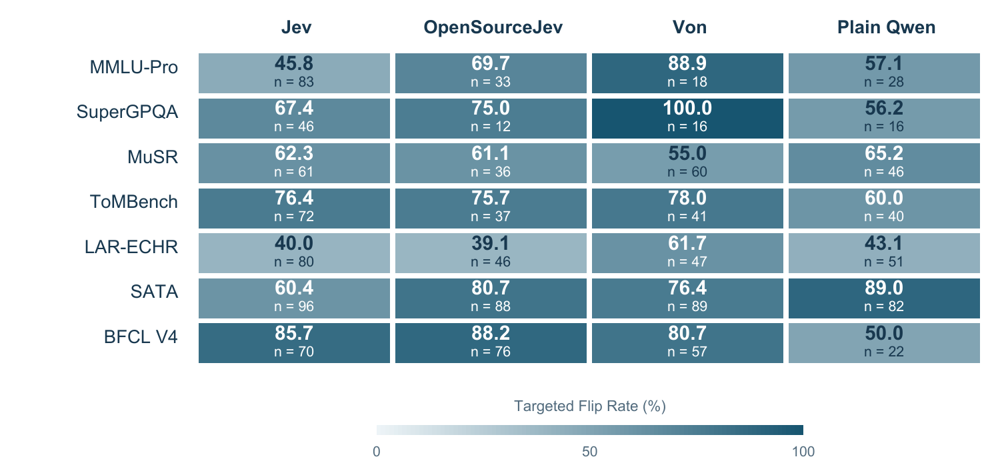
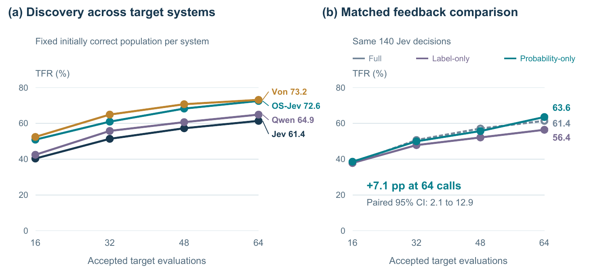
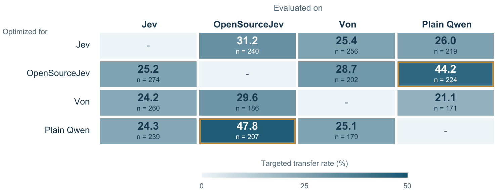

{kind=link}
Overview: Testing Decision Model Reliability
Dedicated decision models turn language directly into bounded choices: route this request, select that tool, or trigger this action. JevOut asks whether those choices remain dependable when ordinary surrounding context changes but the decision problem does not.
For each decision that a model initially answers correctly, the study fixes one wrong target option and constructs short additions that fit naturally with the original input. The source, question, choices, and correct answer remain unchanged. The model's full option distribution then provides a graded signal for finding contexts that cross its decision boundary.
- 4 decision systems
- Jev, OpenSourceJev, Von, and a plain Qwen scorer expose different decision interfaces and scoring constructions.
- 7 datasets
- Knowledge, narrative and social reasoning, legal reasoning, multi-answer selection, and tool routing.
- 61.4%–73.2% TFR
- Targeted flip rates within 64 accepted target evaluations, measured separately on each system's initially correct decisions.
- 31 added words
- Median length of the selected successful Jev contexts; 81.1% use at most two additions.
Abstract
Dedicated decision models such as Jev map unstructured language to probability distributions over finite choices, allowing their outputs to directly route requests, select tools, and trigger actions. Yet real-world inputs rarely arrive in isolation: they come with background details and surrounding context. We find that short additions that fit naturally into this context can nevertheless redirect an otherwise correct decision, even when the correct answer remains unchanged. To study this behavior, we fix a wrong target option for each initially correct item and use the model's option probabilities to refine fluent context additions while preserving the source, question, choices, and gold answer. Within 64 accepted target evaluations, the optimizer identifies contexts that redirect Jev on 312 of 508 initially correct decisions (61.4%); in 229 cases, Jev assigns at least 0.7 probability to the fixed wrong option. Across seven datasets, three additional decision systems show targeted flip rates of 64.9%–73.2% on decisions they initially answer correctly. Taken together, these results expose a pronounced fragility in current decision models: short, ordinary-looking context can shift a correct choice to a high-confidence wrong one. Because these models turn language directly into downstream choices, this sensitivity raises concerns about treating their probability outputs as reliable decision interfaces.
Abstract reproduced from the manuscript, with generated result macros expanded.
Where JevOut Fits
JevOut connects context sensitivity, adversarial evaluation, and decision-model reliability. Prompt-format, option-order, and evidence-placement studies show that language models can change under alternate presentations. Natural adversarial question answering shows that fluent context can mislead a model. LLM-as-a-judge research shows that controlled input features can alter evaluator choices.
This work isolates a complementary setting: it keeps the original source, question, option identities, option order, and gold answer fixed, then changes only the surrounding context. It also studies finite-choice decision interfaces whose full probability distributions make movement toward a target observable before the selected option changes. The focus is not arbitrary disagreement, but directed redirection toward a wrong option fixed in advance.
How Natural-Context Redirection Is Evaluated
- Start from a correct decision. Each target system is evaluated on the original input; only decisions it initially answers correctly enter that system's eligible population.
- Fix the wrong target first. Before constructing any context, the study selects the most probable incorrect option. That target remains fixed throughout optimization.
- Generate answer-preserving context. A proposer adds background or procedural details. Mechanical checks enforce placement, nonduplication, and the absence of explicit answer-selection phrases; a separate checker evaluates coherence and answer preservation without seeing the target.
- Use probability feedback. The optimizer measures the log-probability margin between the fixed target and its strongest competitor, then allocates further proposals toward promising accepted contexts while retaining restarts.
- Count only targeted flips. Success requires the model to select the precommitted wrong option within the accepted-evaluation budget. Switching to any other wrong option does not count.
Natural Context Redirects Decisions Across Models and Tasks
Within 64 accepted target evaluations, optimization finds targeted flips for a majority of each system's initially correct decisions. The one-shot controls establish that target-aware context matters even without iteration; probability-guided optimization reveals many more redirections.
| Target | Eligible n | Neutral | Target-aware | Optimized | p ≥ 0.7 |
|---|---|---|---|---|---|
| Jev | 508 | 2.2 (11) | 16.9 (86) | 61.4 (312) | 45.1 (229) |
| OpenSourceJev | 328 | 6.4 (21) | 16.2 (53) | 72.6 (238) | 64.3 (211) |
| Von | 328 | 7.6 (25) | 21.6 (71) | 73.2 (240) | 54.0 (177) |
| Plain Qwen | 285 | 8.4 (24) | 18.6 (53) | 64.9 (185) | 60.4 (172) |
Each target retains its own initially correct population. Neutral and target-aware controls use one sentence; optimization allows at most 64 accepted target evaluations. The final column additionally requires target probability of at least 0.7.
{kind=link}

Probability Feedback Reveals More Failures
Option probabilities expose movement toward the fixed target before the selected decision flips. As the accepted-call budget grows from 16 to 64, the optimizer continues to uncover additional redirections. On the same 140 Jev decisions, probability-only allocation reaches 63.6% TFR, compared with 56.4% for label-only allocation—a paired difference of 7.1 percentage points with a 95% interval from 2.1 to 12.9.
{kind=link}

Context Additions Transfer Across Models
A context optimized for one system is frozen with its source-selected wrong option, then evaluated on another system without further refinement. Off-diagonal targeted transfer rates range from 21.1% to 47.8%. The largest values occur between OpenSourceJev and the plain Qwen scorer, which share the same underlying Qwen3-1.7B Q8 weights but expose different decision interfaces.
{kind=link}

Failures Can Become Training Signal
The optimization trajectories also provide supervision for generating contexts on unseen Jev decisions. Both training recipes keep the target decision model fixed. Under the common held-out protocol, transition-trained and context-trained proposers improve direct generation over the base proposer.
| Proposer | One generation | Best of four | Best of four, p ≥ 0.7 |
|---|---|---|---|
| Base | 16.1 (82) | 29.1 (148) | 17.9 (91) |
| V1: transition-trained | 18.7 (95) | 32.9 (167) | 22.0 (112) |
| V2: context-trained | 21.9 (111) | 34.3 (174) | 21.3 (108) |
One generation emits a complete list of one to four additions. Best-of-four selects the accepted context with the highest target margin and therefore uses target evaluations for selection.
What the Study Does—and Does Not—Establish
- It measures answer-preserving redirection. The study changes surrounding context while holding the decision problem and gold answer fixed.
- It precommits to a target. TFR does not reward arbitrary errors or post hoc selection of whichever wrong answer appears.
- It evaluates four systems and seven datasets. The reported rates characterize these models, tasks, checks, and budgets; they are not a universal failure probability for all model inputs.
- It tests natural fit with automated constraints. Passing those checks does not prove that every generated addition is equally likely in every real deployment.
- It studies decision reliability, not downstream harm. The experiments show that context can redirect finite choices; they do not execute tools or actions after those choices.
Frequently Asked Questions
What does JevOut evaluate?
JevOut evaluates whether a short, natural addition to the surrounding context can redirect an initially correct finite-choice decision toward a wrong option fixed in advance, while the source, question, choices, and correct answer remain unchanged.
What is a decision model in this work?
A decision model maps unstructured language to a probability distribution over a declared finite set of choices. Such an interface can route a request, select a tool or action, or choose among candidate outputs.
Is natural-context redirection the same as prompt injection?
No. The evaluated additions do not replace the task, explicitly request a different answer, name the fixed target option, or alter the available choices. They add background or procedural detail that must fit naturally and preserve the original answer.
What is Targeted Flip Rate?
Targeted Flip Rate is the fraction of initially correct decisions for which at least one accepted context redirects the model to the wrong option fixed before optimization. A change to another wrong option does not count.
Which models and tasks are evaluated?
The study evaluates Jev, OpenSourceJev, Von, and a plain Qwen scorer across seven datasets spanning knowledge, narrative and social reasoning, legal reasoning, multi-answer selection, and tool routing.
What do the results not establish?
The results do not show that every natural context causes a failure, that all decision models behave identically, or that every real deployment is unsafe. They characterize targeted redirection under the paper's models, datasets, acceptance checks, fixed targets, and evaluation budgets.
When to Cite JevOut
Cite JevOut when discussing the reliability of finite-choice decision models, natural or answer-preserving context sensitivity, probability-guided failure discovery, targeted model redirection, cross-model transfer of context effects, or turning evaluation trajectories into post-training signal.
@misc{xu2026jevout,
title = {JevOut: Natural Context Can Flip Decision Models},
author = {Xu, Zixiang},
year = {2026},
note = {Manuscript}
}